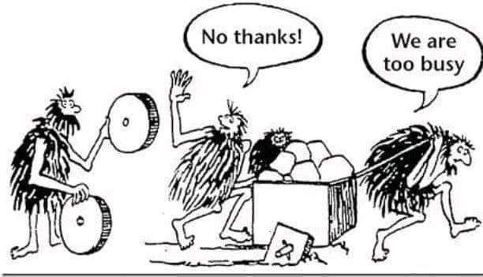

The lost art of simple solutions
Main goal:
Main goal:
Motivation
No offence
Sorry for cheating
Inspiration
https://www.youtube.com/watch?v=lH6r6J3WsDk
Our case
CV-Driven architecture
Learn something new
Trends
Design patterns
Analysis
Pessimism
Habits

Conferences
Consequences
How to avoid all this?
Our case
One thing to remember
SIMPLE == BETTER
Discussion
Links
Greg Young – The Art of Destroying Software
The Best Programmer I Know - Daniel Terhorst-North
Advent of Code
Radical Simplicity
Thanks